Curriculum Vitae
Datos Generales
Apellido: Tillerias
Nombre: Alejandro Antoñio
Documento: 24550532
Nacionalidad: Argentino
Sexo: Masculino
Fecha de Nacimiento: 06/05/1975
Estado Civil: Soltero
Email: atillerias@gmail.com
Telefono: 11-3292-2022
Domicilio: San Justo, Partido de la Matanza.
Nivel de Estudio
Primario Area de Estudio, Institución: Escuela N° 171, Inicio-fin 1990-1997 Estado: Graduado
Secundario, Institución: DE ESTUDIO ALBATROS. Inicio-Fin 2002-2003 Estado: cerró institución por no tener acuerdo ministerial.
Nivel de Estudio, Terciario, Titulo NO. Institución: U.N.L.A.M. Inicio-fin 2003-2006 Estado: Incompleto
Experiencia Laboral
REPOSITOR PANIFICADORA “LA PERLA” (3 hipermercados en zona sur) Fecha: 01/02/1997-01/08/1997 (flexibilización laboral)
REPOSITOR PANIFICADORA “DOÑA NOLY” (dos hipermercados zona sur) Fecha: 02/08/1997-02/03/1998 (flexibilización laboral)
ENCARGADO DE MANEJO DE PERSONAL PRODUCTIVO CON MANEJO DE COMPRAS en Empresa “AUCHAN” . Fecha: 05/03/1998- 30/09/2000.
DEMOSTRACION A EMPRESAS Y PROMOCION DE PRODUCTOS CONGELADOS “MOLINOS LAGOMARSINO” 02/10/2000-30/02/2001.
PASANTE ADMINISTRATIVO ESTATAL “MINISTERIO PUBLICO DE DEFENSA”. Fecha 01/03/2001 - 30/06/2005.
PASANTE ADMINISTRATIVO “UNLAM”. Fecha 01/11/2006-31/05/2008.
ADMINISTRACIÓN Y ORGANIZACION DE PERSONAL, en Empresa de logística (Empresa propia). Fecha: 30/09/2008 - 29/02/2017. Actividad: ADMINISTRACION GENERAL en el área de transporte.
Otros Datos de Interes
Curso de manipulación de alimentos (Auchan Argentina)
Curso de organización de personal productivo (Auchan Argentina)
Exámen aprobado de agrupamiento servicios auxiliares 101 Ministerio Público de defensa. 2016.
Exanen aprobado de personal auxiliar de justicia 91 , Ministerio Público fiscal de la Nación 2017.
Formación complementaria
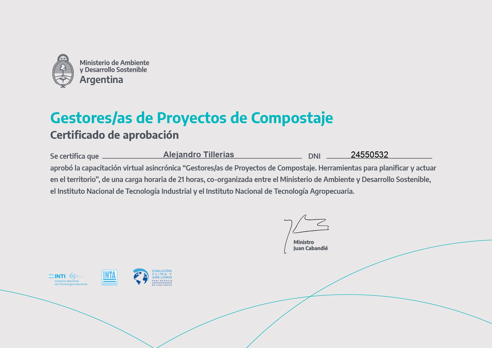 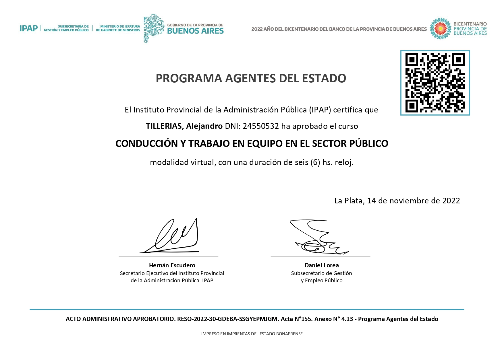 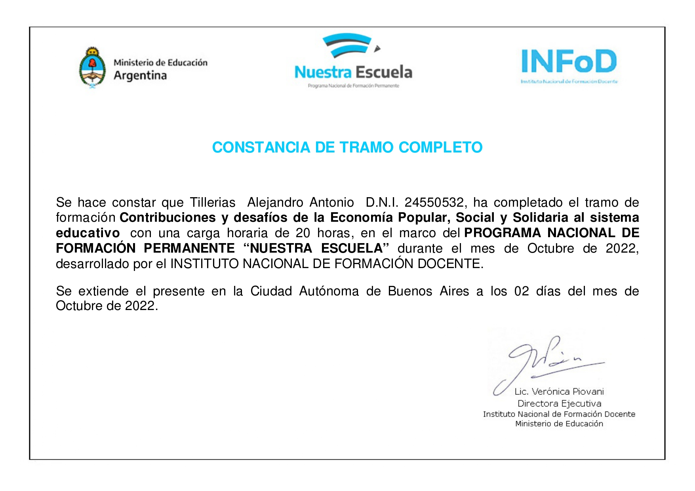 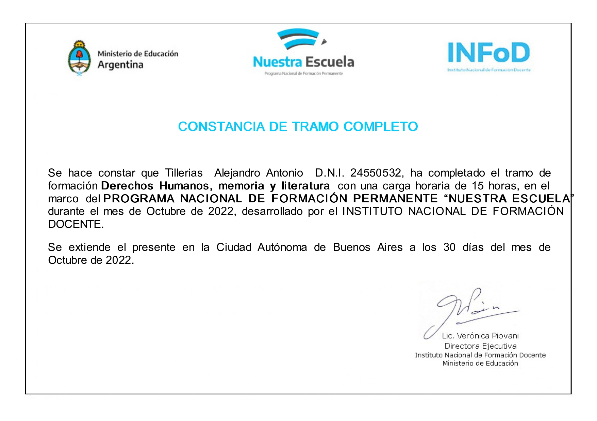 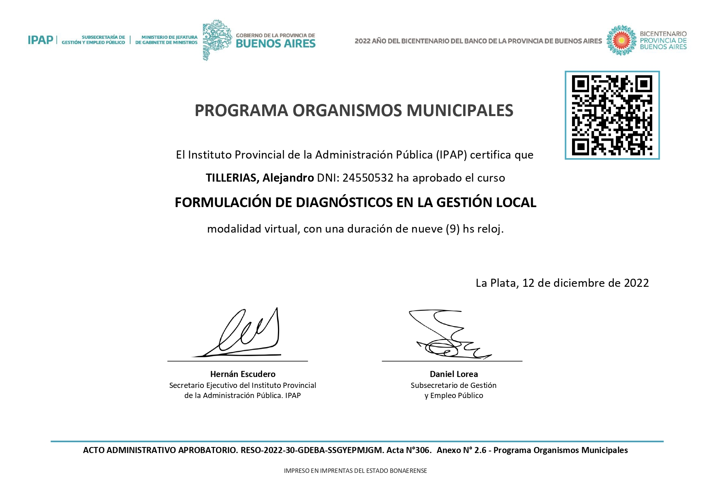 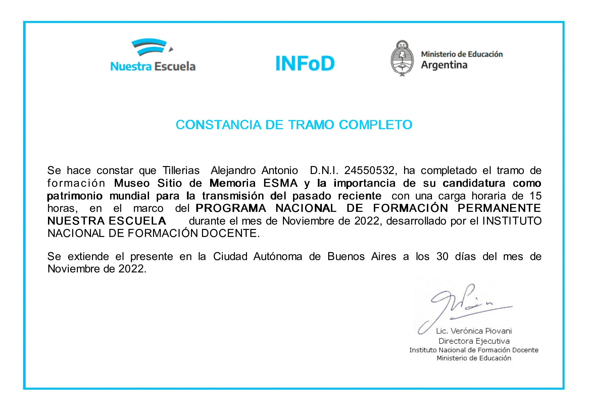 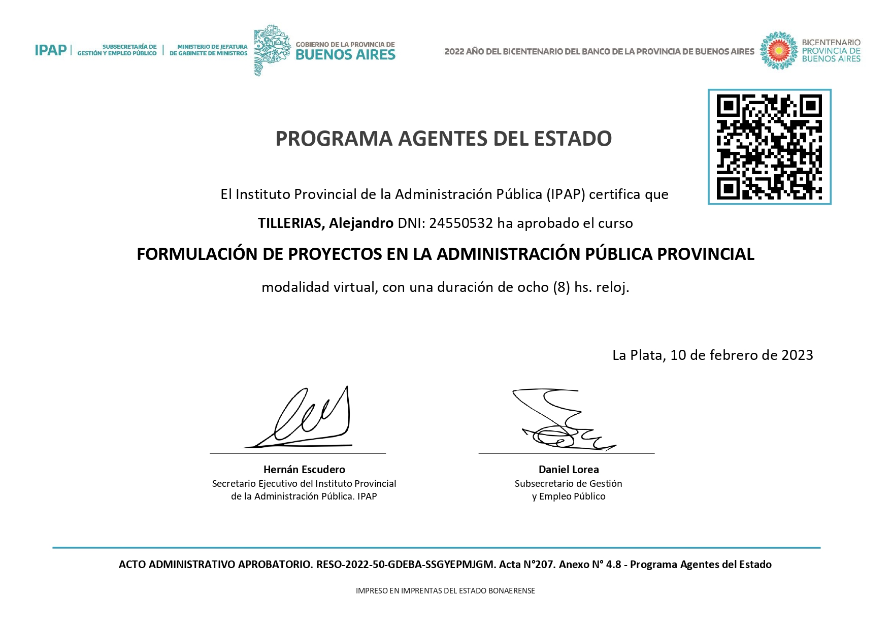 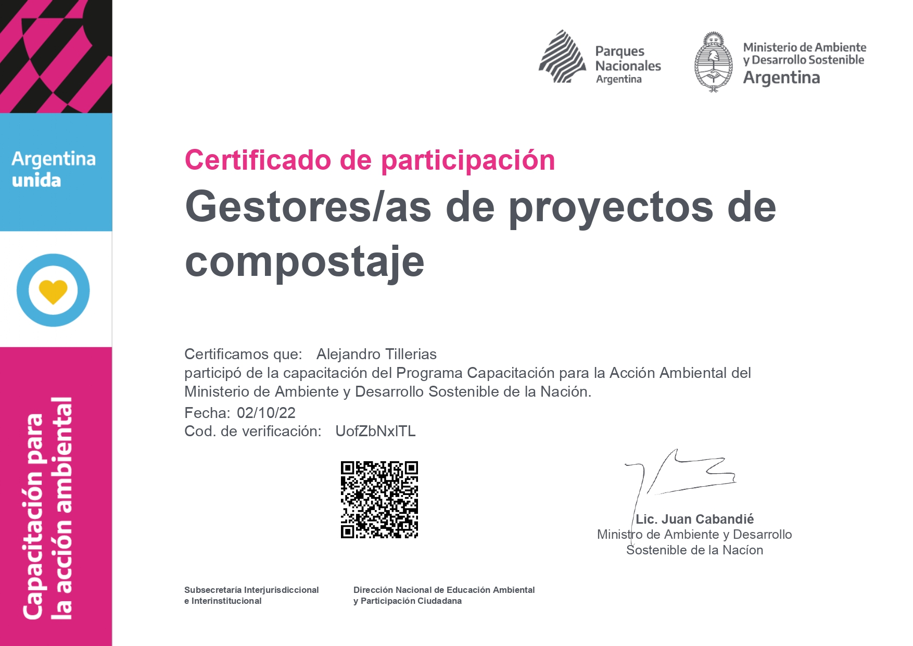 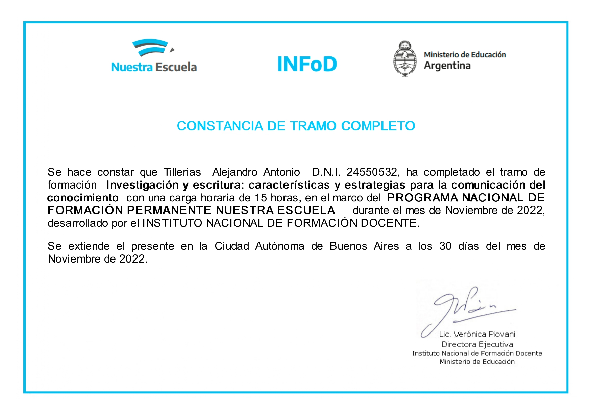 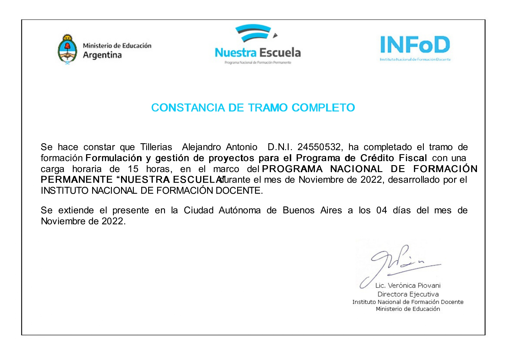 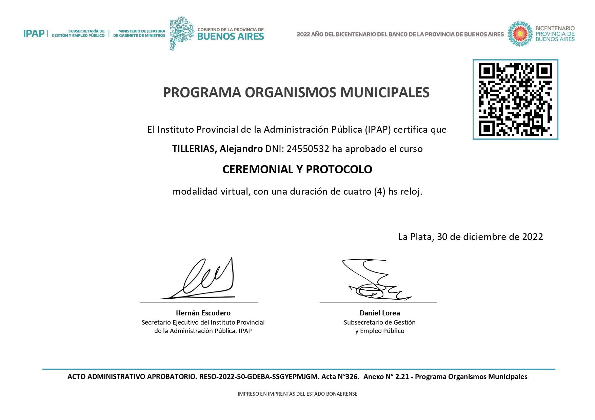 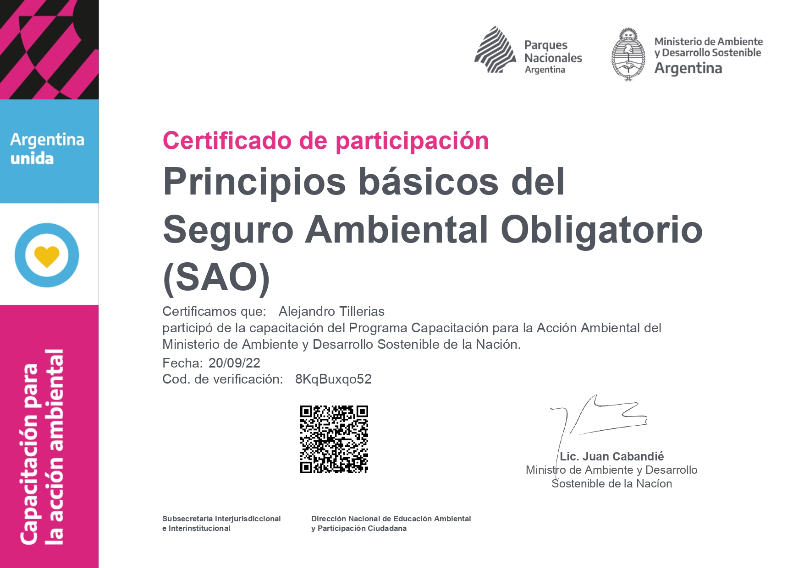 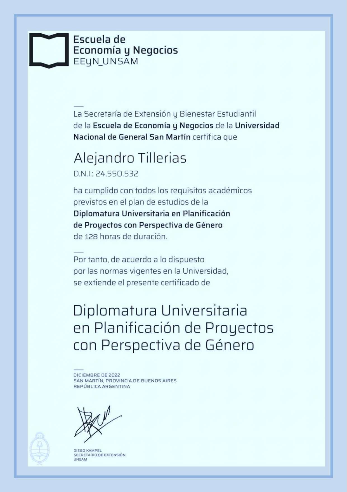